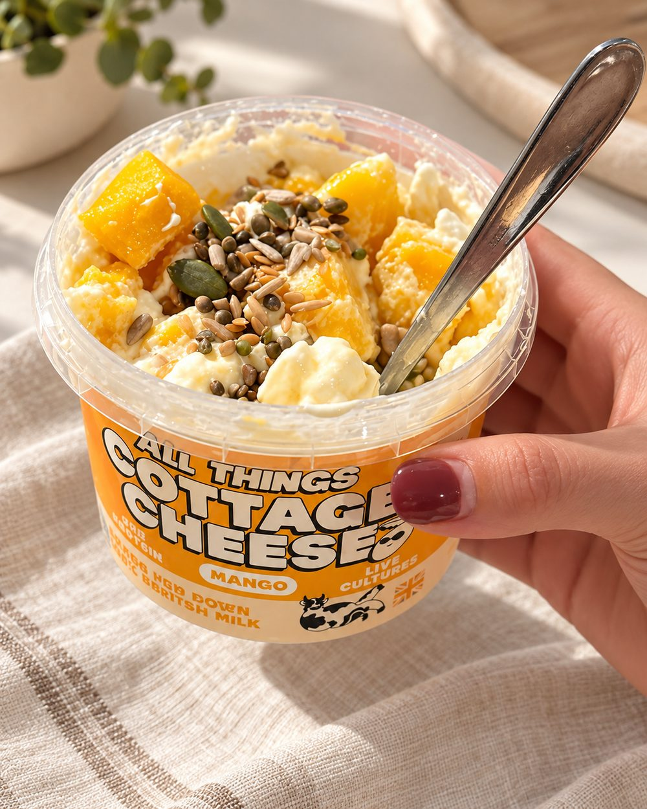
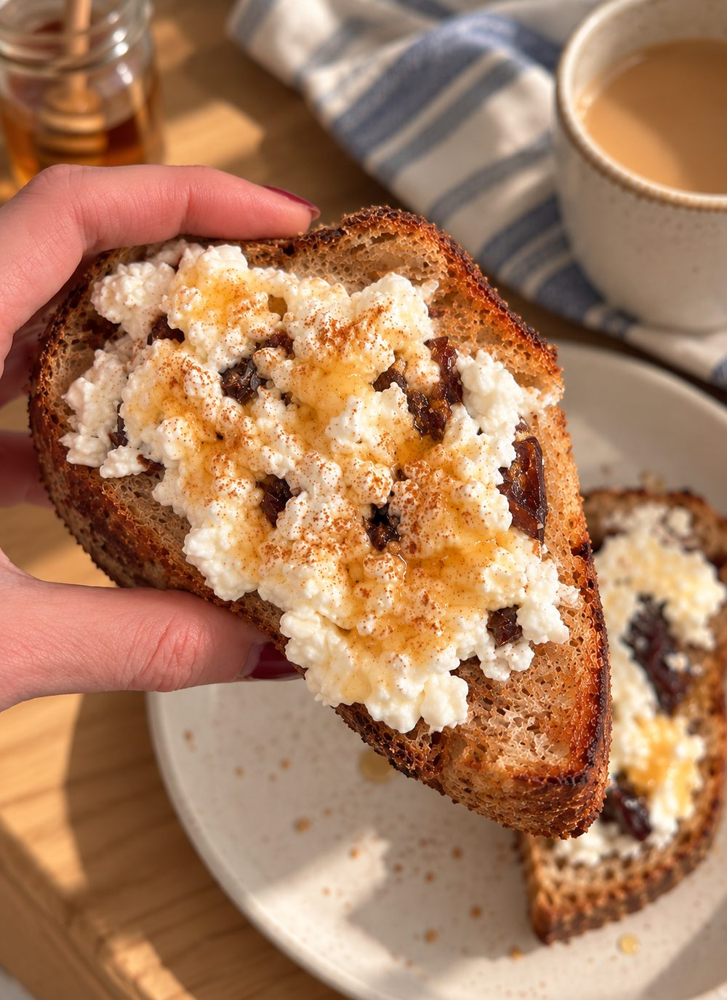
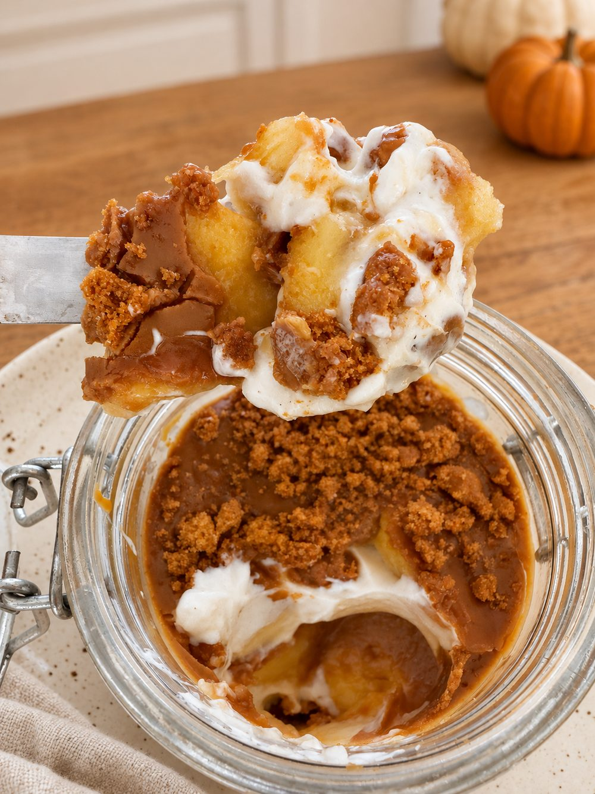
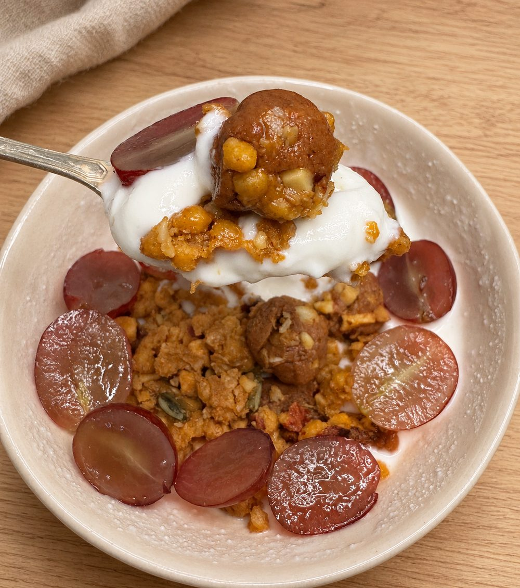

← All recipes
 31g proteinTastes like a Snickers!
31g proteinTastes like a Snickers!
 18g proteinNo ice cream maker
18g proteinNo ice cream maker
The series
Protein Snack Hack
Classic snacks and treats, made higher protein. Quick to make, with supermarket ingredients and the protein on every recipe.

13g proteinReady in 2 minsMango Cheesecake Protein Pot

17g proteinAir fryerPre-Run Protein Toast
31g proteinTastes like a Snickers!Chocolate Peanut Yogurt Bowl
18g proteinNo ice cream makerBlueberry Protein Froyo

20g protein4 ingredientsBiscoff Banana Bread Pudding

25g protein3 ingredients